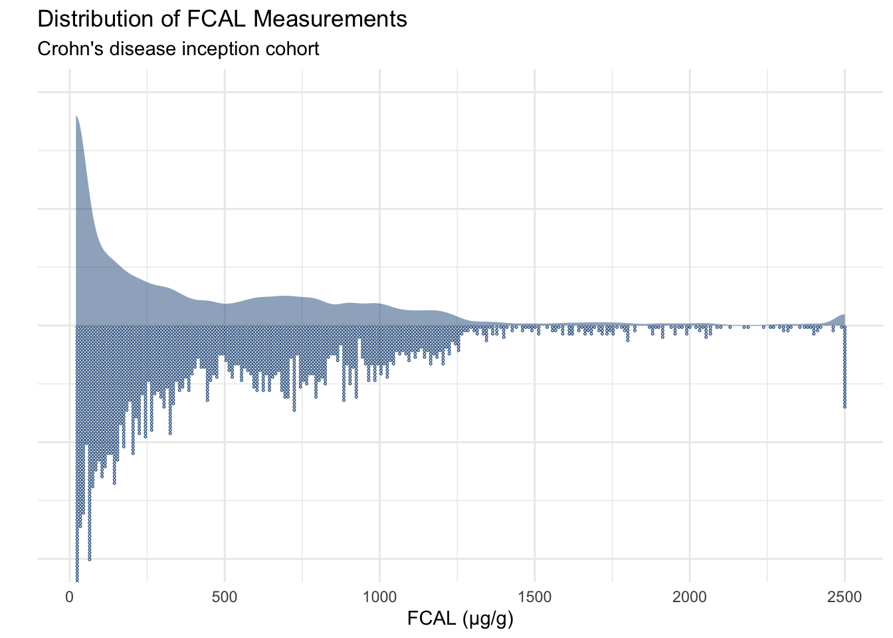
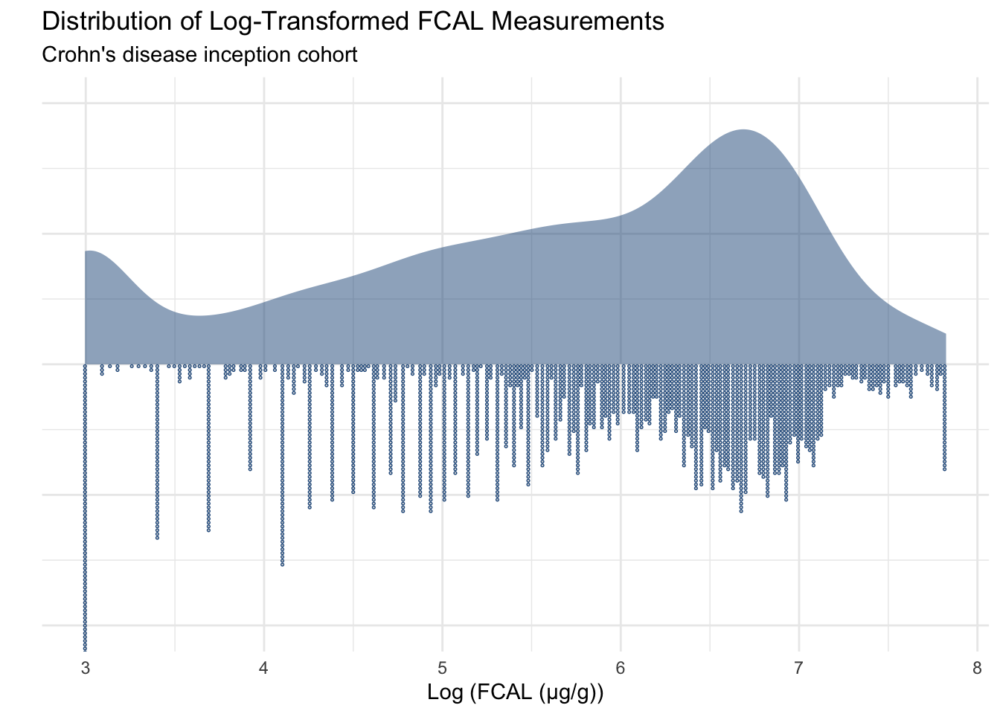
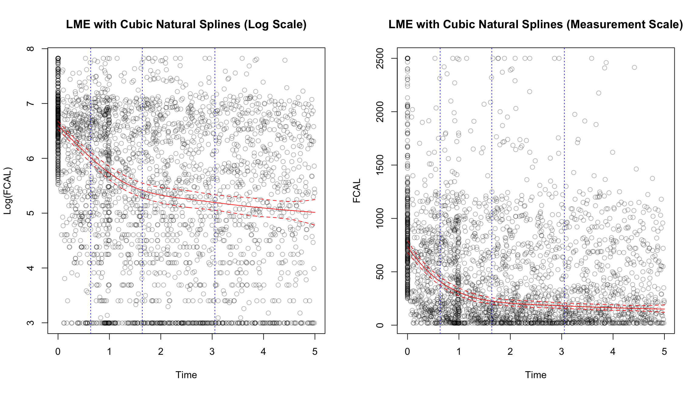
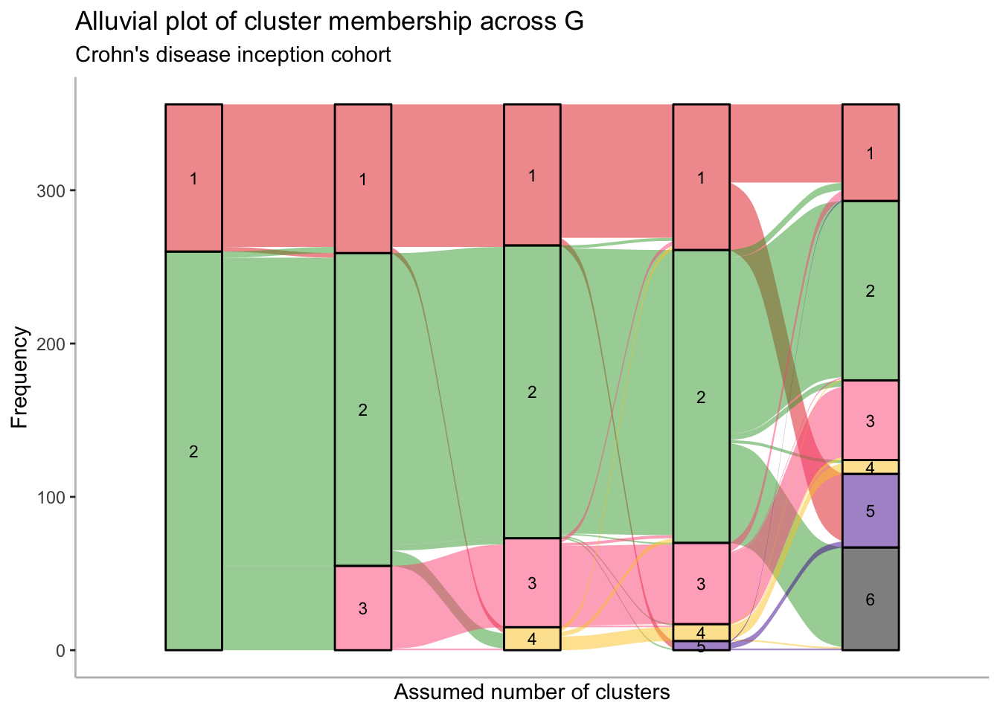
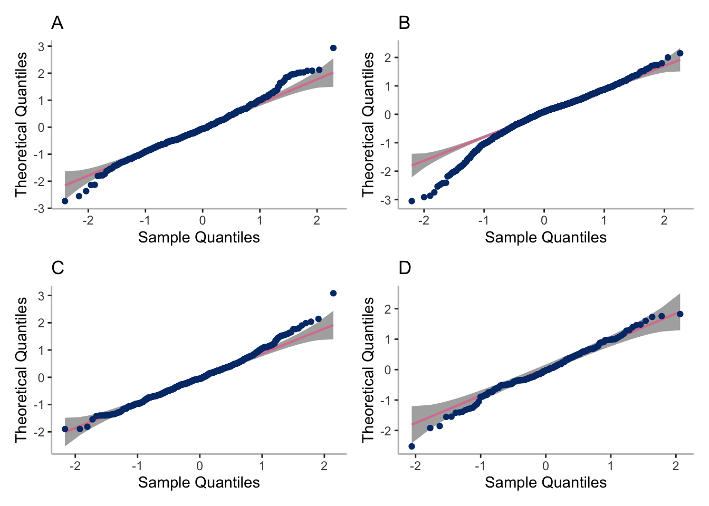

set.seed(123)# Fitting the LCMMs takes around three hours (when running single threaded)# if cache.models is true then the saved model objects will be used instead of# refitting the modelscache.models<-TRUE###########################-- Packages --###########################library(tidyverse)## Modelling ##library(lcmm)library(splines)## Presentation ##library(htmltools)library(patchwork)library(ggdist)library(grid)library(ggalluvial)library(qqplotr)if(!require(DT)){install.packages("DT")}###########################-- Data read --###########################FCcumulative<-readRDS(paste0("/Volumes/igmm/cvallejo-predicct/","processed-data/cdi/","FCcumulativeLongInc.RDS"))############################################-- Create directories and readme files --############################################if(!dir.exists("plots")){dir.create("plots")}fileConn<-file("plots/README.md")writeLines(c("# README","",paste("This directory contains plots created by the analysis", "but are not provided as figures (supplementary or", "otherwise) in the paper")),fileConn)close(fileConn)if(!dir.exists("cache"))dir.create("cache")fileConn<-file("cache/README.md")writeLines(c("# README","",paste("This directory stores cached versions of R objects which","take a long time to create (such as LCMM fit objects).")),fileConn)close(fileConn)if(!dir.exists("paper"))dir.create("paper")fileConn<-file("paper/README.md")writeLines(c("# README","",paste("This directory contains all figures used in the paper.","The sup subdirectory contains supplementary figures")),fileConn)close(fileConn)if(!dir.exists("paper/sup"))dir.create("paper/sup")if(!dir.exists("plots/residuals")){dir.create("plots/residuals")}#########################-- Custom Functions --########################## Build DT::datatable objects from matrix of fit statisticsDTbuild<-function(hlme.metric, caption){hlme.metrics<-cbind(hlme.metrics, group =seq(1, nrow(hlme.metrics)))hlme.metrics<-hlme.metrics[, c(4, 1, 2, 3)]DT::datatable(round(as.data.frame(hlme.metrics), 2), options =list(dom ='t'), caption =tags$caption( style ='text-align: center;',h3(caption)), style ="bootstrap4", rownames =FALSE, colnames =c("Clusters","Maximum log-likelihood","AIC","BIC"), escape =FALSE)}#' Spaghetti plots of each class#' @param models list containing HLME objects#' @param G How many classes does the model assume?#' @param log Logical. Should plots be on log scale#' @param indi Logical. Should separate plots for each class be generated?#' @param multi Logical. Should all plots be plotted alongside each other? #' @param tmax Maximum observation period#' @param column Logical. Should all sub-plots be in a single column? Defaults#' to false (two columns)#' @param prob.cutoff Posterior probability cut-off for subjects to be included#' as trajectories#' @param mapping Numeric vector which gives reordering of plots in a#' multiplot. Need to take into account plots are generated by column - not#' row#' @param sizes Output latent class sizes#' @param save Logical. Should sub figure labels be generated?spaghetti_plot<-function(FCcumulative,models,G,log=TRUE,indi=FALSE, multi=TRUE,tmax=5,column=FALSE, pprob.cutoff=NA,sizes=FALSE,mapping=NULL,save=FALSE){if(!is.na(pprob.cutoff)){pprob.cutoffs<-c()for(subjectinunique(models[[G]]$pprob$id)){temp<-subset(models[[G]]$pprob, id==subject)pprob<-temp[, 2+temp$class]if(pprob>pprob.cutoff){pprob.cutoffs<-c(pprob.cutoffs, subject)}}FCcumulative<-subset(FCcumulative, id%in%pprob.cutoffs)}if(indi){spaghetti_plot_sub(FCcumulative =FCcumulative, models =models, G =G, log =log, multi =FALSE, tmax =tmax, column =column, pprob =pprob, sizes =sizes, mapping =mapping)}if(multi){spaghetti_plot_sub(FCcumulative =FCcumulative, models =models, G =G, log =log, multi =TRUE, tmax =tmax, column =column, pprob =pprob, sizes =sizes, mapping =mapping, save =save)}}spaghetti_plot_sub<-function(FCcumulative,models,G,multi=FALSE,log,unit,tmax=5,column=column,pprob=NA,sizes=sizes,mapping=mapping,save=save){labels<-c("A", "C", "B", "D")time<-seq(0, tmax, by =0.01)if(column){# use single column layout for sub-plotslayout<-matrix(seq(1, G), ncol =1, nrow =G)}else{# use two column layout for sub-plotslayout<-matrix(seq(1, 2*ceiling(G/2)), ncol =2, nrow =ceiling(G/2))}# Set up the pagepushViewport(viewport(layout =grid.layout(nrow(layout), ncol(layout))))data_pred<-data.frame(time =time)pred<-predictY(models[[G]],data_pred, var.time ="time", draws =TRUE)lcmm_uit<-as.data.frame(pred$pred)lcmm_uit$time<-timeif(is.null(mapping)){mapping<-1:G}for(ginmapping){matchidx<-as.data.frame(which(layout==g, arr.ind =TRUE))id.group<-models[[G]]$pprob[models[[G]]$pprob[, 2]==mapping[g], 1]if(sizes){message("There are ",length(id.group)," subjects in cluster ",g,".")}if(!log){p[[g]]<-ggplot(data =subset(FCcumulative, id%in%id.group),aes(x =time, y =exp(value)))+geom_line(aes(group =id), alpha =0.1)+theme_minimal()+geom_line(data =lcmm_uit,aes(x =time, y =exp(lcmm_uit[, paste0("Ypred_class", mapping[g])])), size =1.5, col ="red")+geom_line(data =lcmm_uit,aes(x =time, y =exp(lcmm_uit[, paste0("lower.Ypred_class",mapping[g])])), col ="red", lty =2)+geom_line(data =lcmm_uit,aes(x =time, y =exp(lcmm_uit[, paste0("upper.Ypred_class",mapping[g])])), col ="red", lty =2)+xlab("Time (years)")+ylab("FCAL (μg/g)")+ylim(0, 2500)}else{p[[g]]<-ggplot(data =subset(FCcumulative, id%in%id.group),aes(x =time, y =value))+geom_line(aes(group =id), alpha =0.1)+theme_minimal()+geom_line(data =lcmm_uit,aes(x =time, y =lcmm_uit[, paste0("Ypred_class",mapping[g])]), size =1.5, col ="red")+geom_line(data =lcmm_uit,aes(x =time, y =lcmm_uit[, paste0("lower.Ypred_class",mapping[g])]), col ="red", lty =2)+geom_line(data =lcmm_uit,aes(x =time, y =lcmm_uit[, paste0("upper.Ypred_class",mapping[g])]), col ="red", lty =2)+geom_hline(yintercept =log(250), color ="#007add", lty =3, size =1.5)+xlab("Time (years)")+ylab("Log (FCAL (μg/g))")+ylim(2, log(2500))}if(multi){if(save){# Add subfigure labelsprint(p[[g]]+ggtitle(labels[g])+theme_classic()+theme(axis.line =element_line(colour ="gray"), plot.title =element_text(face ="bold", size =20)), vp =viewport(layout.pos.row =matchidx$row, layout.pos.col =matchidx$col))}else{print(p[[g]], vp =viewport(layout.pos.row =matchidx$row, layout.pos.col =matchidx$col))}}else{print(p[[g]])}}}
To achieve our aims of identifying clusters within the CD population with similar FCAL profiles, we use latent class mixed models (LCMMs) with natural cubic spline formulations for the fixed and random effects components. LCMMs are an extension of linear mixed effects models with an added fixed effect class-specific component. Cluster membership in a LCMM is given via a multinomial logistic model.
Previously, we have investigated using polynomial regression models with an I-splines link function, and models which use Gaussian radial basis functions (GRBFs) in order to model the fixed and random components of an LCMM. Unfortunately, the polynomial regression and I-splines link approaches demonstrated inflexibility and, in the case of polynomial regression behaved erratically near the ends of the time period.
The GRBF approach was very sensitive to l, a length scale parameter, and the iterative Marquardt algorithm implemented in the {lcmm} package did not converge in many cases- possibly due the number of parameters required to be estimated and/or the Runge phenomenon (Fornberg and Zuev 2007).
This has led us to consider an approach using natural cubic splines which has a few notable advantages (Elhakeem et al. 2022):
Less parameters need to be estimated than either a Gaussian radial basis function regression model or a polynomial regression model with the same flexibility . This reduces the time complexity when fitting the model and in the future may also make extensions more practically feasible.
Natural cubic splines enforce linearity between t_0 and the first knot and between the last knot and t_\text{max} which ensures the model does not behave erratically in these sometimes problematic areas.
Natural cubics are not highly sensitive to a continuous parameter and instead requires only K, the number of knots, to be tuned: being robust to where the knots themselves are placed.
Formal defintions
For formal definitions of the models and statistics we have used in the work, please see the supplementary material for our paper.
The Crohn’s Disease Inception Cohort
The background for the data we will fit to the models and an explanation of the data processing steps implemented can be found on a dedicated page. Due to the distribution of the FCAL values (Figure 1), FCAL values have been log-transformed prior to model fitting (Figure 2).
Code
FCcumulative%>%ggplot(aes(x =value, y =NULL))+stat_slab(size =0.8, alpha =0.5, fill ="#235789")+geom_dots(binwidth =10, size =1, side ="bottom", color ="#235789")+theme_minimal()+theme(axis.text.y =element_blank())+xlab("FCAL (µg/g)")+ylab("")+ggtitle("Distribution of FCAL Measurements","Crohn's disease inception cohort")

Figure 1: Distribution of FCAL values when in measurement units.
Code
FCcumulative$value<-log(FCcumulative$value)FCcumulative%>%ggplot(aes(x =value, y =NULL))+stat_slab(size =0.8, alpha =0.5, fill ="#235789")+geom_dots(binwidth =0.02, size =1, side ="bottom", color ="#235789")+theme_minimal()+theme(axis.text.y =element_blank())+xlab("Log (FCAL (µg/g))")+ylab("")+ggtitle("Distribution of Log-Transformed FCAL Measurements","Crohn's disease inception cohort")

Figure 2: Distribution of FCAL values after a log transformation has been applied.
Model fitting
LCMMs with 2 - 6 assumed clusters are considered. As recommended by Proust-Lima, Philipps, and Liquet (2017), a model is initially fitted with one cluster (I.E a regular linear mixed effects model) which is used to sample initial values in a grid search approach which attempts to find optimal models for each assumed number of clusters based upon maximum likelihood. The trajectory of this linear mixed effects model is given by Figure 3.
For the fixed and random components of each model, we will consider natural cubic splines of time with three knots (I.E five fixed points including the boundaries of the splines. The knots for the natural cubic splines are placed at the 1st quantile, median, and 3rd quartile of the FCAL measurement times for the study cohort. This corresponds to [0.63, 1.64, 3.05] years from diagnosis.
Code
ngroups<-c(2, 3, 4, 5, 6)rep<-50maxiter<-10if(!file.exists("cache/cubicbf.fits.RDS")|!cache.models){m1<-hlme(fixed =value~ns(time, df =4), random =~ns(time, df =4), subject ="id", data =FCcumulative, verbose =FALSE, var.time ="time", maxiter =8000)print(summary(m1))if(!m1$conv)stop("LME did not converge \n")hlme.metrics<-matrix(nrow =0, ncol =3)colnames(hlme.metrics)<-c("maximum log-likelihood", "AIC", "BIC")temp<-matrix(c(m1$loglik, m1$AIC, m1$BIC), nrow =1)rownames(temp)<-"1"hlme.metrics<-rbind(hlme.metrics, temp)cubicbf.fits<-list()cubicbf.fits[["group1"]]<-m1for(ngroupinngroups){ng<-ngroupcl<-parallel::makeCluster(parallel::detectCores())parallel::clusterExport(cl, "ng")hlme.fit<-gridsearch( rep =rep, maxiter =maxiter, minit =m1, cl =cl,hlme(fixed =value~ns(time, df =4), mixture =~ns(time, df =4), random =~ns(time, df =4), subject ="id", ng =ng, data =FCcumulative, verbose =FALSE))parallel::stopCluster(cl)cubicbf.fits[[paste0("group", ngroup)]]<-hlme.fitif(hlme.fit$conv){cat("Convergence achieved for ", ng, "subgroups ✅ \n")}else{cat("Convergence NOT achieved for ", ng, " subgroups ⚠️ \n")}temp<-matrix(c(hlme.fit$loglik, hlme.fit$AIC, hlme.fit$BIC), nrow =1)rownames(temp)<-ngrouphlme.metrics<-rbind(hlme.metrics, temp)}saveRDS(cubicbf.fits, "cache/cubicbf.fits.RDS")saveRDS(hlme.metrics, "cache/cubicbf.RDS")}else{cubicbf.fits<-readRDS("cache/cubicbf.fits.RDS")hlme.metrics<-readRDS("cache/cubicbf.RDS")}m1<-cubicbf.fits[[1]]x<-predictY(m1, newdata =data.frame(time =seq(0, 5, by =0.01)), var.time ="time", draws =TRUE)par(mfrow =c(1, 2))plot(FCcumulative$time,FCcumulative$value, xlab ="Time", ylab ="Log(FCAL)", main ="LME with Cubic Natural Splines (Log Scale)", col =rgb(0,0,0, 0.3))lines(x$times[,1], x$pred[,1], col ="red")lines(x$times[,1], x$pred[,2], col ="red", lty =2)# Conf intervalslines(x$times[,1], x$pred[,3], col ="red", lty =2)# Plot knots as vertical linesabline(v =as.numeric(attr(ns(FCcumulative$time, df =4),"knots")), col ="blue", lty =3)plot(FCcumulative$time,exp(FCcumulative$value), xlab ="Time", ylab ="FCAL", main ="LME with Cubic Natural Splines (Measurement Scale)", col =rgb(0,0,0, 0.3))lines(x$times[, 1], exp(x$pred[, 1]), col ="red")lines(x$times[, 1], exp(x$pred[, 2]), col ="red", lty=2)lines(x$times[, 1], exp(x$pred[, 3]), col ="red", lty=2)abline(v =as.numeric(attr(ns(FCcumulative$time, df =4), "knots")), col ="blue", lty =3)par(mfrow =c(1,1))

Figure 3: Linear mixed effects (LME) model fitted to data and used to generate inital values for the grid search method used for LCMMs with G > 2
Model selection
Model fit
We consider two metrics when considering model fit: AIC and BIC which penalises model complexity.
Code
groups.1<-cubicbf.fits[[1]]groups.2<-cubicbf.fits[[2]]groups.3<-cubicbf.fits[[3]]groups.4<-cubicbf.fits[[4]]groups.5<-cubicbf.fits[[5]]groups.6<-cubicbf.fits[[6]]DTbuild(hlme.metrics, caption ="Fit Metrics for Natural Cubic Splines Model")
Considering all of the models above, AIC is most optimal for the G = 5 model and BIC is optimal for the G = 2 model. However, considering an alluvial plot (Figure 4) suggests neither G = 2 nor G = 5 are suitable models. The G = 2 model clearly has additional well defined cluster not properly represented by just two clusters, whilst the G=5 model results in an incredibly small new cluster. As such, G = 4 may be a more suitable alternative.
Cluster discrimination
Alluvial plots
Code
re_label<-function(old.G, new.G, alluvial.df){new.order<-rep(new.G, new.G)old.clusters<-subset(alluvial.df, G==old.G)new.clusters<-subset(alluvial.df, G==new.G)for(ginold.G:1){ids<-subset(old.clusters, class==g)$idfor(new.gin1:new.G){new.clusters.g<-subset(new.clusters, new.g==class)if(nrow(subset(new.clusters.g, id%in%ids))>0.5*length(ids)){new.order[new.g]<-g}}}alluvial.df[alluvial.df[, "G"]==new.G, "class"]<-plyr::mapvalues(alluvial.df[alluvial.df[, "G"]==new.G, "class"], from =seq(1, new.G),new.order)return(alluvial.df)}# convert to alluvial formatalluvial.df<-cbind(groups.2$pprob[, 1:2], G =2)alluvial.df<-rbind(alluvial.df, cbind(groups.3$pprob[, 1:2], G =3))alluvial.df<-rbind(alluvial.df, cbind(groups.4$pprob[, 1:2], G =4))alluvial.df<-rbind(alluvial.df, cbind(groups.5$pprob[, 1:2], G =5))alluvial.df<-rbind(alluvial.df, cbind(groups.6$pprob[, 1:2], G =6))alluvial.df$id<-as.character(alluvial.df$id)alluvial.df$class<-as.factor(alluvial.df$class)# eliminate label switchingalluvial.df<-re_label(2, 3, alluvial.df)alluvial.df<-re_label(3, 4, alluvial.df)alluvial.df<-re_label(4, 5, alluvial.df)alluvial.df<-re_label(5, 6, alluvial.df)p<-ggplot(alluvial.df,aes(x =G, stratum =class, alluvium =id, fill =class, label =class))+scale_x_discrete(expand =c(.1, .1))+geom_flow()+geom_stratum(alpha =0.5)+geom_text(stat ="stratum", size =3)+theme_classic()+theme(axis.line =element_line(colour ="gray"))+theme(legend.position ="none")+ggtitle("Alluvial plot of cluster membership across G","Crohn's disease inception cohort")+scale_fill_manual(values =c("#e3281f","#3aa534","#ff5885","#fbc926","#511e9d","black"))+xlab("Assumed number of clusters")+ylab("Frequency")print(p)p<-p+ggtitle("", "")ggsave("paper/alluvial.png", p, width =8, height =4.5, units ="in")ggsave("paper/alluvial.pdf", p, width =8, height =4.5, units ="in")

Figure 4: Alluvial plot demonstrating how cluster membership changes as the assumed number of clusters increase. The height of each band indicates the size of each cluster.
Posterior classifications
An alternative to co-clustering when considering cluster discrimination is to consider posterior classification possibilities. From the below data, we can see how these posterior probabilities change as the number of assumed clusters increase
pprobs.2<-c()pprobs.3<-c()pprobs.4<-c()pprobs.5<-c()pprobs.6<-c()for(iin1:nrow(cubicbf.fits[[1]]$pprob)){class.2<-groups.2$pprob[i, 2]pprobs.2<-c(pprobs.2, groups.2$pprob[i, class.2+2])class.3<-groups.3$pprob[i, 2]pprobs.3<-c(pprobs.3, groups.3$pprob[i, class.3+2])class.4<-groups.4$pprob[i, 2]pprobs.4<-c(pprobs.4, groups.4$pprob[i, class.4+2])class.5<-groups.5$pprob[i, 2]pprobs.5<-c(pprobs.5, groups.5$pprob[i, class.5+2])class.6<-groups.6$pprob[i, 2]pprobs.6<-c(pprobs.6, groups.6$pprob[i, class.6+2])}pprobs.2<-tibble(prob =pprobs.2)pprobs.3<-tibble(prob =pprobs.3)pprobs.4<-tibble(prob =pprobs.4)pprobs.5<-tibble(prob =pprobs.5)pprobs.6<-tibble(prob =pprobs.6)pprobs.2$Model<-as.factor(rep("Two clusters", nrow(pprobs.2)))pprobs.3$Model<-as.factor(rep("Three clusters", nrow(pprobs.3)))pprobs.4$Model<-as.factor(rep("Four clusters", nrow(pprobs.4)))pprobs.5$Model<-as.factor(rep("Five clusters", nrow(pprobs.5)))pprobs.6$Model<-as.factor(rep("Six clusters", nrow(pprobs.6)))pprobs<-rbind(pprobs.2, pprobs.3, pprobs.4, pprobs.5, pprobs.6)p<-pprobs%>%ggplot(aes(x =prob, y =Model))+#geom_histogram(bins = 40, fill = NA, position="identity")stat_slab(aes(fill =Model),color ="gray", size =0.8, alpha =0.2)+geom_dots(aes(fill =Model, color =Model), dotsize =1)+xlab("Posterior probability for cluster membership")+ylab("")+ggtitle("Distribution of Posterior Probabilities Across Models","Subject-specific posterior probabilities for assigned cluster")+theme_minimal()+scale_color_manual(values =c("#e3281f","#3aa534","#ff5885","#fbc926","#511e9d"))+scale_fill_manual(values =c("#e3281f","#3aa534","#ff5885","#fbc926","#511e9d"))+scale_y_discrete(limits =rev)print(p)
Code
ggsave("plots/Distributions.png", p, width =8.5, height =4.5, units ="in")ggsave("plots/Distributions.pdf", p, width =8.5, height =4.5, units ="in")
Residual plots
To ensure model assumptions are not violated, residual plots are also consulted. The residual plots are very similar across all models considered and are reassuring. As we later decide on the G = 4 model (see the Spaghetti plots per cluster section), we have generated additional plots examining the normality of the residuals for this model.
Figure 5: (A) Density plot of residuals for the four-cluster model. (B) Quantile-quantile plot of residuals for the four-cluster model.
Code
dict<-cubicbf.fits[[4]]$pprob[, c("id", "class")]dict$class<-plyr::mapvalues(dict$class, from =c(1, 2, 3, 4), to =c(4, 3, 1, 2))temp<-merge(cubicbf.fits[[4]]$pred, dict, by ="id")par(mfrow =c(2,2))labels<-c("A", "B", "C", "D")p<-list()for(iin1:4){p[[i]]<-subset(temp, class==i)%>%ggplot(aes(sample =resid_ss))+stat_qq_band()+stat_qq_line(color ="#D8829D")+stat_qq_point(color ="#023777")+theme_classic()+theme(axis.line =element_line(colour ="gray"))+ylab("Theoretical Quantiles")+xlab("Sample Quantiles")+ggtitle(labels[i])}ggsave("paper/cluster-resids.pdf",(p[[1]]+p[[2]])/(p[[3]]+p[[4]]), width =8, height =8, units ="in")print((p[[1]]+p[[2]])/(p[[3]]+p[[4]]))

Figure 6: Quantile-quantile plots of residuals for the four-cluster latent class mixed model stratified by (A) cluster 1; (B) cluster 2; (C) cluster 3; and (D) cluster 4.
Plotting the mean cluster trajectories alongside spaghetti plots of all subject trajectories provides evidence for the G = 4 model being the most appropriate.
spaghetti_plot(FCcumulative, cubicbf.fits, G =5, log =TRUE, sizes =TRUE)
Measurement-scale, all subjects
Code
spaghetti_plot(FCcumulative, cubicbf.fits, G =5, log =FALSE)
Log-scale, pprob > 0.8 only
Code
spaghetti_plot(FCcumulative,cubicbf.fits, G =5, log =TRUE, pprob.cutoff =0.8)
Measurement-scale, pprob > 0.8 only
Code
spaghetti_plot(FCcumulative,cubicbf.fits, G =5, log =FALSE, pprob.cutoff =0.8)
Log-scale, all subjects
Code
spaghetti_plot(FCcumulative, cubicbf.fits, G =6, log =TRUE, sizes =TRUE)
There are 48 subjects in cluster 1.
There are 63 subjects in cluster 2.
There are 52 subjects in cluster 3.
There are 117 subjects in cluster 4.
There are 67 subjects in cluster 5.
There are 9 subjects in cluster 6.
Measurement-scale, all subjects
Code
spaghetti_plot(FCcumulative, cubicbf.fits, G =6, log =FALSE)
Log-scale, pprob > 0.8 only
Code
spaghetti_plot(FCcumulative,cubicbf.fits, G =6, log =TRUE, pprob.cutoff =0.8)
Measurement-scale, pprob > 0.8 only
Code
spaghetti_plot(FCcumulative,cubicbf.fits, G =6, log =FALSE, pprob.cutoff =0.8)
Model output
After considering all of the above findings, the model which assumes four clusters has been deemed the most appropriate. The summary statistics for this model can be found below. The four splines are denoted by X_{1}(t), \ldots, X_{4}(t). We use this notation in the supplementary materials for the paper.
Code
### Match notation to supp. materialsx<-cubicbf.fits[[4]]x$Xnames<-c("Intercept", paste0("X", seq(1, 4), "(t)"))# Random effectsnames(x$best)<-c(paste("Intercept class ", seq(1, 3)),# Class membership modelpaste("Intercept class ", seq(1, 4)),# Longitudinal modelpaste("X1(t) class ", seq(1, 4)),paste("X2(t) class ", seq(1, 4)),paste("X3(t) class ", seq(1, 4)),paste("X4(t) class ", seq(1, 4)),paste("Varcov ", seq(1, 15)),"Standard error")summary(x)
Heterogenous linear mixed model
fitted by maximum likelihood method
hlme(fixed = value ~ ns(time, df = 4), mixture = ~ns(time, df = 4),
random = ~ns(time, df = 4), subject = "id", ng = ng, data = FCcumulative,
verbose = FALSE)
Statistical Model:
Dataset: FCcumulative
Number of subjects: 356
Number of observations: 2856
Number of latent classes: 4
Number of parameters: 39
Iteration process:
Convergence criteria satisfied
Number of iterations: 20
Convergence criteria: parameters= 8.7e-05
: likelihood= 8.1e-05
: second derivatives= 1.8e-07
Goodness-of-fit statistics:
maximum log-likelihood: -3983.49
AIC: 8044.97
BIC: 8196.1
Maximum Likelihood Estimates:
Fixed effects in the class-membership model:
(the class of reference is the last class)
coef Se Wald p-value
Intercept class 1 -1.60714 0.60509 -2.656 0.00791
Intercept class 2 -0.97547 0.24466 -3.987 0.00007
Intercept class 3 -0.71987 0.19000 -3.789 0.00015
Fixed effects in the longitudinal model:
coef Se Wald p-value
Intercept class 1 6.63001 0.18260 36.309 0.00000
Intercept class 2 6.60767 0.10692 61.803 0.00000
Intercept class 3 6.40075 0.08792 72.805 0.00000
Intercept class 4 6.68268 0.05943 112.452 0.00000
X1(t) class 1 -0.06345 0.61580 -0.103 0.91794
X1(t) class 2 -3.02786 0.30213 -10.022 0.00000
X1(t) class 3 -2.58120 0.28225 -9.145 0.00000
X1(t) class 4 -0.32661 0.15224 -2.145 0.03192
X2(t) class 1 -1.66557 0.66716 -2.497 0.01254
X2(t) class 2 -2.43912 0.41567 -5.868 0.00000
X2(t) class 3 -0.73639 0.30260 -2.434 0.01495
X2(t) class 4 -0.76938 0.18402 -4.181 0.00003
X3(t) class 1 -4.31021 0.83955 -5.134 0.00000
X3(t) class 2 -2.38786 0.33995 -7.024 0.00000
X3(t) class 3 -4.60973 0.32173 -14.328 0.00000
X3(t) class 4 -1.29125 0.19433 -6.645 0.00000
X4(t) class 1 -1.93148 0.69759 -2.769 0.00563
X4(t) class 2 -2.65713 0.33911 -7.835 0.00000
X4(t) class 3 -0.59806 0.28348 -2.110 0.03488
X4(t) class 4 -0.21947 0.15304 -1.434 0.15155
Variance-covariance matrix of the random-effects:
Intercept X1(t) X2(t) X3(t) X4(t)
Intercept 0.01816
X1(t) 0.00354 0.69013
X2(t) -0.07139 -0.20182 1.56220
X3(t) 0.03241 -0.21967 0.67262 0.65261
X4(t) -0.06129 -0.19956 0.31425 0.09602 0.47886
coef Se
Residual standard error: 0.77672 0.01273
Elhakeem, Ahmed, Rachael A. Hughes, Kate Tilling, Diana L. Cousminer, Stefan A. Jackowski, Tim J. Cole, Alex S. F. Kwong, et al. 2022. “Using Linear and Natural Cubic Splines, SITAR, and Latent Trajectory Models to Characterise Nonlinear Longitudinal Growth Trajectories in Cohort Studies.”BMC Medical Research Methodology 22 (1): 68. https://doi.org/10.1186/s12874-022-01542-8.
Fornberg, Bengt, and Julia Zuev. 2007. “The Runge Phenomenon and Spatially Variable Shape Parameters in RBF Interpolation.”Computers & Mathematics with Applications 54 (3): 379–98. https://doi.org/https://doi.org/10.1016/j.camwa.2007.01.028.
Proust-Lima, Cécile, Viviane Philipps, and Benoit Liquet. 2017. “Estimation of Extended Mixed Models Using Latent Classes and Latent Processes: The R Package lcmm.”Journal of Statistical Software 78 (2): 1–56. https://doi.org/10.18637/jss.v078.i02.